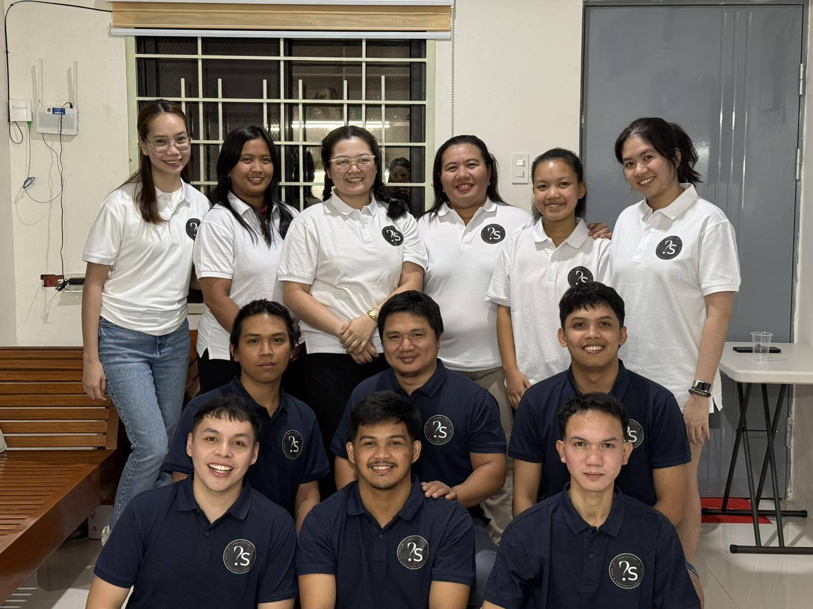

Our Team
Ready to elevate your project or advance your career?
Contact us today to report considerations and make an impact.

Meet the Team
At NQSTV Cost Estimating, Services, we pride ourselves in being a Dedicated Qualified Personnel.
However, it cannot be Disregarded in its to report considerations, a lot to know we will be further in the knowledge to this team.
Engr. Cecilia Torres
Engr. Cecilia has started this company in August 2017 and has been a part of a number of projects involving Cost Estimate and Quantity Take Offs, with a proven track record of success. She excels in delivering precise quantity take-offs and estimates across a diverse range of projects. Her expertise ensures that each project is approached with meticulous attention to detail and a commitment to accuracy, providing clients with reliable and comprehensive financial projections.

Engr. Jhun Rhold Tan
QS TEAM SUPERVISOR-ELECTRICAL ENGINEER
He demonstrates strong proficiency in generating accurate and detailed estimates for a wide variety of projects. His skill set ensures a meticulous and precise approach, delivering dependable and well-rounded financial projections to clients.
Arch. Sherlynne V. De Leon, UAP
Junior Team Lead
I am a Architect/Quantity Surveyor with experience on both designing and construction management specializing on QS works from Pre-construction to Post construction on diverse projects.
Engr. Monique Arocena
Junior Team Lead
Registered Civil Engineer with 5 years of specialized experience in Quantity Surveying, focusing on Pre-Tender Estimation for Civil, Architectural, and Structural (CSA) Trades. Proven expertise in delivering high-accuracy quantity take-offs and Bill of Quantities (BOQ) for a wide spectrum of projects, ranging from high-rise vertical developments to institutional and industrial facilities and land development. Technical background as a licensed engineer enables precise interpretation of structural plans and formulation of competitive bid tabulations.

Arch. Paul Justine Marzo
QS Junior Team Lead
Both a Registered & Licensed Architect and Quantity Surveyor with combined 7 years of extensive experience in the field of construction. Proven track record in managing diverse projects, including commercial and residential developments. A professional committed to continually enhance their skills and knowledge to deliver efficient and effective solutions.

Engr. Dominique Collantes
CIVIL-ARCHITECTURAL QS – SENIOR LEVEL
With a demonstrated history of delivering accurate and dependable results, she stands out for her precision and consistency across various project scopes. Her detailed approach and strong focus on accuracy enable her to provide clients with clear, trustworthy, and comprehensive financial insights.

Engr. Lourd Jericho Ibañez
Civil Archi. QS - Intermediate Level
I am a Civil Engineering graduate specializing in Construction Engineering Management, with three years of e xperience as a Quantity Surveyor. I am proficient in Bluebeam, AutoCAD, and Microsoft Office applications. I have managed a range of projects, including commercial buildings, residential developments, and other construction works. My experience has strengthened my ability to adapt to diverse work environments and deliver efficient, effective solutions that support project success and professional growth.

Engr. Carl Chester Buenviaje
QS MEPFS
Engr. Carl Chester Buenviaje is a QS MEPFS

Engr. Jasmine Cosio
CIVIL-ARCHITECTURAL QS – INTERMEDIATE LEVEL
Experienced as a Site Inspector and Quantity Surveyor, working as a consultant embedded within client project teams. Brings strong capability in cost control, quality assurance, and quantity take-offs, supporting accurate decision-making, efficient project delivery, and effective stakeholder collaboration.

Engr. Joshua David
CIVIL-ARCHITECTURAL QS – INTERMEDIATE LEVEL
I am a driven and detail-oriented professional who enjoys continuous learning and tackling complex, logic-based challenges. My experience as a junior quantity surveyor and site inspector has strengthened my abilities in cost estimation, BOQ preparation, bid evaluation, and coordination with contractors and suppliers. I stay focused on my goals, adapt quickly to changing demands, and work efficiently to keep projects on track and within budget.
Genesis Mae Pisueña
Office Administrator
I serve as an Office Administrator with primary responsibility for both administrative and financial operations. My duties include handling accounting processes such as preparing financial statements, managing budgets, and ensuring accurate financial records. I oversee payroll administration, monitor costs per project, and analyze the profitability of each project. Additionally, I manage and track office supplies to ensure the smooth and uninterrupted flow of daily office activities.
Marissa Villanueva
Office Canvasser
I serve as an Office Canvasser responsible for canvassing and sourcing materials required for the company’s projects. My role involves coordinating with suppliers, comparing prices, and securing the best options through both online inquiries and walk-in visits.